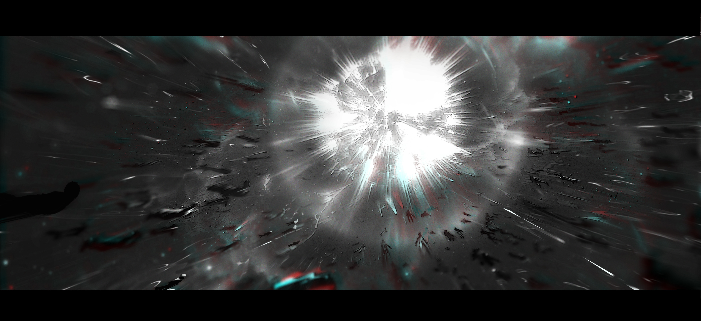

剧情大纲
#人外 #虫族 #军校 #战争

万字超大纲。
只想写醋不想写饺子之人。基本就是一大串流水账，重要片段会写得细一点。
星历zzz年，虫族战争全面爆发。最终在aaa年，帝国以失去了9%的领星为代价取得胜利。
为了杀死王虫这种高维生命体，人类对超磁星SGR 381-10进行了干扰。当战火延烧，虫洞开启时时空被极端扭曲，这种空曲率改变扰乱星磁层，使原本已经接近临界状态的磁力线失去平衡，最终引发大规模磁重连，触发磁星巨耀发，巨大的磁暴随之而来的是高能的X射线和伽马射线覆盖周围数光年。当时的帝国元帅（菲尔帕托亲王）负责困住王虫与其同归于尽。
在磁暴的瞬间王虫将强大的精神力扩散到最大范围，精神力将在其所及范围内觅得一枚胚胎作为精神寄生的宿主。
王虫死去的时候约121岁，正值巅峰时期。
当再度苏醒，他已成为了一个人类幼崽，失去精神力的他只能用人类的视角体验着这个世界。
过去的他从不把这些虚伪、丑陋、弱小的生物放在眼里，现在依然漠视。
出生时基因检测他会分化成一个Omega，6岁时他正式分化，父母便给他安排了一系列的Omega新俍课程。在外人眼里，他是个不吵不闹、乖巧的小Omega，但对他而言任何事只要配合着应付过去就行了。
8岁时他与弗拉維乌斯家大他1岁的Alpha・扎雷克订婚。
就这么照着安排当个无可挑剔的Omega生活了15年，某天他突然不顾家族反对，执意报考了军校。
乌利艾尔天生的精神力阈值被判定为A级，但因为王虫的基因持续修正宿主的躯体，在军校测定时发现他的精神力阈值比起当初更高了，甚至是逼近S级。
虽然体力上不及Alpha的优势，但王虫刻在基因序列里的战斗本能，加上长达百年历练的战术与技巧，他一路过关斩将成了少数被军事学院录取的Omega。
在军校期间，他才得知虫母被人类控制，埋藏心里多年的恨意又被重新燃起。
这一年，在遥远的帝国边境犀牛座748b行星再次发现了虫族的踪迹，元老院决定组成勘察队前往调查，带领本次勘察队的是帝国元帅——埃德蒙・克劳迪奥。
勘察也会让军校成绩优异的十名学生参与实地见学。只有在学科考试、实战试炼和机甲考试中都成绩优异的学生才有机会参与，乌利艾尔为了取得见学资格最终拿了综合成绩第九。
但最后的见学名单出乎意料，并没有乌利艾尔的名字，理由不明。
勘察队出发当天，他伪装混入穿梭舰，和队伍一起抵达了犀牛座748b。
虫族留下的痕迹不多，但都还很新，最近的距离现在粗估不过八到十年。而且以习惯来看，乌利艾尔几乎是立刻就确定了这些虫族就是他的种群。
在虫母和王虫同时出事这种严峻时刻，他们看起来相当谨慎，并没有在表层筑巢。不过以这种情况来看，在这个星球的几年只是过度，新的虫母已经诞生，且情况转向稳定，虫族才会放弃这个暂时的巢穴，寻找更合适孕育生命的星球。
只不过尼洛修斯到死前都还未婚配，当时也并没有若虫进化的副女王，所以乌利艾尔并不知道新虫母是谁。
人类对虫族的了解并不深，除了战争，他们并没有见过其他面向的虫族，甚至连他们从何而来、生活形态为何都不知道，这是他们第一次近距离接触虫族生活过的场域，一切都必须从零开始。
经过仪器的扫描，勘察队很快就找到了虫巢的入口，但已被完全封死。他们很快着手开始搭建临时基地、打开入口、对巢穴内部进行扫描，并拟出最合适的策略准备探索。
因为巢穴的构造十分复杂，先由五组先遣队按照扫描的的路线图进入探路。一开始都按部就班，直到四个小时后，四支队伍还是正常回传数据，但剩下一支不知为何失联了，他们负责的也正是整个巢穴最重要的前往中央的路线。
其他人被分配前去四个联系正常的队伍汇合，埃德蒙则领上两名亲信亚瑟和蓋文，三人单独走往中央的路线。
在进入虫巢差不多三个小时的路程后，所有设备的通信像是同时被什么屏蔽了一样。又前进了一段距离，某种异样感却越来越强烈，显然有东西正在靠近。
乌利艾尔是等三人进入后，过了很久才跟进这条路线，也刻意屏蔽掉了自己的气息，但显然常年在军中训练有素的顶级Alpha们还是能有所察觉，直到听到元帅的警告他才不得不露面。被问名字的时候他谎报了家门，称自己是军校生札雷克。
考量到让其在失去通信的情況下独自返程的风险，埃德蒙还是让他留在队里，待回去了再做处分。
从主干道更深入往里走终于到了中央巢室，在这里遇到了几个岔口。
大伙讨论后决定分成两组行动。亚瑟和蓋文本就都是非常优秀的帝国战士，由他们俩一组。水平在二人之上的元帅则和见习生走另一条路。
身为虫族之首，他知道这条通道便是通往王室的方向。
王室相当于虫母与王虫的主宫室，最靠外的位置是王虫所在的大堂，更靠内是王虫的寝宫，最深处才是虫母所在的母巢，也是整个虫巢最核心的位置。
通往王室的路线非常长，在真正进入王室以前还需要穿过几个宫室，这样的宫室是高阶虫族的主要活动区域，在整个虫巢中有成百上千个，主要集中于中央巢室，并且结构十分复杂。
即便已经荒废多年仍然能够看出彼时的巍峨壮丽，时不时也会出现一些图像、雕刻，还有类似文字图样之类的痕迹，两人便会将一切记录下来。
他们都是属于话少的类型，一路上甚少交谈，直到乌利艾尔提出了自己的推测，两人才议起了对于虫族的看法和猜想。讨论中埃德蒙竟对眼前的少年生出几分欣赏，对方对于虫族的理解远远超过大部分普通爱好者，有些思路也很新奇独特，看来是特别对此做过深度研究。
埃德蒙仅依照现有少得可怜的线索，推演出很多正确的信息。这让乌利艾尔第一次被人类勾起了兴趣，认真打量起了这个处于人类金字塔顶端的Alpha。
进入巢穴的第三天，两个人终于到达了传说中的王室大堂。相比于前方富丽堂皇的宫室，这里显得单调得多，却透着一股难以言喻的压迫。
偌大的大堂比起先前所见的一切宽阔了数倍，目光所及空旷而寂静，仿佛任何一点细微的动静都会在其中不断回荡，森严肃穆的气息弥漫于整座大堂。
自从进到王室，乌利艾尔的头部总会感到一阵阵刺痛，并且每隔一段时间就会发作一次，他的精神力与某些东西产生了共鸣，这种情况随着逐渐深入也愈发加剧。
抵达的母巢侧室，这里破败得不成样子，倒塌的柱和墙掩埋了很多东西，需要更加耐心的搜索。
乌利艾尔忍受着头疼在巨大的母巢中搜索。他的目光因被一个不起眼的位置吸引而定格——那是一具非成体帕瓦拉的遗骸。看样子应该是在虫族离开以后才进入的，但无论如何这都十分异常。
这是一种来自宇宙深渊的生物，与虫族为互食关系。
帕瓦拉虽然会为了狩猎虫族而短暂远离深渊入口，但据他所知距离这里最近的深渊入口少说也得在210万宙里外，这片星域应该绝非帕瓦拉的出没范围。
更令人不安的是遗骸身上的那些痕迹，他再熟悉不过了。是帕瓦拉死亡后，一种与其共生的生物为了离开宿主所凿开的洞。
他将精力全部投注在思考，并没有发现刚才的疼痛逐渐被一股热浪取代。当埃德蒙大致完成部分的搜索，准备去找另一边的少年时才意识到不对劲。
——空气中充满了的Omega信息素。
信息素脱敏是所有军人的固定训练，而等级越高的Alpha和Omega也更能用理智压制欲望，因此对埃德蒙并没有产生太大的反应。
比起信息素本身，更让他在意的是本次参与勘察的军校生最终名单中并没有Omega，而扎雷克・弗拉維乌斯也确确实实是个不折不扣的Alpha。本就是鬼鬼祟祟跟在他们后方，后又谎报身份，让此人的一切都显得更加可疑。
过去也有不少为了争权夺利，故意用Omega引诱高官或贵族失控犯罪的案例。更别说还是S级的Omega了，即便是SS级的Alpha，要是没有做过脱敏训练，恐怕也难以抵抗住诱惑。
或许是还未适应情欲期导致的迟钝，刚反应过来一把匕首已经抵在他的脖颈。
面对突入起来的质问，乌利艾尔才知道自己是怎么回事。这是他初次进入情欲期，在此之前他以為自己只是普通的身體不適，毕竟情慾期初期的狀態顶多就是有点燥热，头昏脑涨、反应迟钝，至少他的大脑还是清醒的。
这次他没有选择再次欺瞒，能说的部分加点适当的美化，把所有問題、細節全都交代了个明明白白。
“宁可冒着被开除的风险，这次勘察对你就这么重要？”
“是。”
因为先前的谈话，埃德蒙已经认定乌利艾尔是个对虫族特别感兴趣，且深入研究过的人，就没有太深究这点。只不过这些说辞他也只相信一半，在无法查证的情况下他不会信任任何人的片面之词。
厘清完几个重要的疑点，最大的问题又回到了乌利艾尔的情欲期。
为了避免事发突然，他事前确实准备了抑制剂，但S级以上的抑制剂由于制作和保存都相对困难，购买需要申请和严格批示，因此他最多就只弄得到市售的普通A级抑制剂。即便抑制效果可能不够，但眼下也只能先使用。
打完抑制剂他便席地而坐稍作休息，而埃德蒙则继续搜集线索。乌利艾尔向对方提起了那具异常的遗骸，以及自己的顾虑，这个地方很有可能还有另一种未知生命体存在。
看着那并不像人类所知虫族的生物，Alpha也很重视，对遗骸进行详细的扫描和取样。
此时入口处传来细微动静，两人顿时提高警觉。
不料出现的是当初失联那支先遣队中的其中两个人，但因为他们都是Alpha，埃德蒙绷紧的神经并没有因此放松。
空气中Omega信息素的浓度还很高，如果有必要他可能需要一人制服两头失控的野兽。
两人逐渐走进，表现却意外地正常，似乎丝毫不受Omega信息素的影响。见到埃德蒙以后先是行了一个军礼，并报告失联后的一切信息，一切看着都毫无异样。
但自从两人靠近，明明Alpha们没有透露出一丝信息素，乌利艾尔好不容易抑制住的热浪却又再度涌起。
刚才的猜想皆在此刻被验证，从自己进到王室以后产生的变化，以及突然开始的情欲期，种种都归功于帕瓦拉的共生体——虫族将这种生命体称为骰子。
两人自始至终都没有看向他一眼，乌利艾尔还是感受到了一阵不善的凝视感。
报告到一半，两名先遣队员的表情忽然变得狰狞，面部肌肉疯狂抽搐，五官也随之扭曲变形，眼中最后一丝清明转瞬便被疯狂吞没。紧接着，两人毫无预警地暴起发难，那副模样甚至已经不像人，更像是两只得了狂犬病的大型癫犬。
埃德蒙早也意识到了两人的不对劲，对突如其来的攻击轻易挡下。
在一打二的情况下，身为帝国元帅的埃德蒙仍然占据上峰，很快便控制住了两人，用能量锁将他们反绑。其中一人挣扎着，眼睛却朝乌利艾尔的方向看去，嘴角缓缓咧开，露出一个令人毛骨悚然的笑。
正当以为稳住了局势，另一人不知道哪里来的怪力，不惜折了自己被压制的双臂挣脱能够束缚一头巨型星兽的能量锁，利齿朝埃德蒙的脖颈而去，却在一声枪响后没了动静。
盯着乌利艾尔的人也同样牺牲了的胳膊，疯了一样地朝少年冲去。
乌利艾尔绷紧理智，与对方缠斗起来。这个先遣队员是S级的Alpha，乌利艾尔在身体素质上本身就没有优势，何况还是这种特殊时期。
不过虫族最大的特点便是好战，即便现在是人类的身躯也不改变这一点，仿佛刚才被激起的热潮就是这对杀戮的渴望。本该身体发软、理智断线的Omega，却在与面前Alpha的交锋中丝毫不落下风。
埃德蒙在开完第一枪后马上就瞄准了第二个目标，但看着Omega并不逊色于对方的作战方式，他决定观察一会。
几乎将对手拿下时，乌利艾尔却突然听见对方笑了，还说了句粗鄙之语，接着他的脑子突然一片空白，在反应过来时已是同样的枪声结束了这一切。
那个Alpha释放了高强度的诱导性信息素，让原本居于优势的Omega漏出了破绽，却也还没来得及动手埃德蒙便将其击落。在少年摔倒前，箭步上前接住了他，而这一切都只发生在电光石火之间。
不确定是否是经历了激烈的战斗，又或是被Alpha的信息素刺激，Omega的体温比先前更烫，呆滞地看向他时，眼色里还带着一层朦胧，不过很快地就回过神。
先将少年抱到一旁休息，他马上回到那两名队员身边观察他们的情况。刚才开枪击中他们的能量并不足以至死，只是强力的镇静麻醉弹。
确认脉搏正常，但顾虑到对遗骸的猜想，他没有轻举妄动，只是将他们严实地用能量锁再次束缚起来，为了防止醒来后再次逃脱，他加强了释放的固定电流。反倒是本该昏迷的两人突然痛苦地抽搐起来，眼睛几乎要被红血丝占满，身体逐渐失去血色变得干瘪，脑袋上肿起让整体面部呈现诡异的变形，里面好像有什么东西在蠕动。随着牠们钻出头骨，伴随的是撕心裂肺的喊叫，接着便彻底安静了。
地上只剩下两具干尸与好几只吃饱喝足的未知生物，离开宿主以后牠们用极快的速度想要寻找掩体，但速度再快也逃不过成为飞镖靶子的命运。
与方才的帕瓦拉遗骸相同，他也对骰子进行了扫描和采样。
埃德蒙脸黑得难看，虽然先遣队和此次勘察队中，超过半数成员都不是他的直属部下，但有什么比亲眼看着自己的队员被折磨死去却束手无策更无奈。
回到乌利艾尔身边，少年相比刚才已经清醒了不少，就是眼眶还带着一点红和湿润。
多半是因为骰子死亡，让那种兴奋剂的效果也消停下来。
他们现在只是在母巢的侧室，还有其他侧室和主室没有深入，他不能让这该死的情欲期耽误搜索，毕竟错过了这次可能就没有下次，他必须尽可能地掌握在自己不在的这段期间虫族发生了什么，以及人类对此会如何对策。
他茫然地看向叽里咕噜不知道在对他说什么的Alpha，拾起所剩不多的理智想办法组织好自己的语言，
“大人…能不能给我一个标记？”
AO之间的标记对于双方而言都是十分亲密的行为，对于贵族Omega而言，未被标记更是被视为贞洁的象徵之一。
埃德蒙一时间都没反应过来自己是不是听错了，毕竟即使他始终没有表现出来，但与发情的S级Omega共处一室，对他而言也不可能毫无影响。
但话说回来，先不考虑少年是否别有目的，就是一般的Omega他都不可能趁人之危，何况还是学生。
他只当这是Omega失去理智后，本能对Alpha渴望的胡言乱语，用言语对少年稍作安抚。
乌利艾尔被拒绝后有些慌了，他现在根本没有余裕去思考该如何用话术说服眼前的Alpha。只能想什么说什么，大概是他这辈子话最多的一次。
内容大致就是好不容易才到了这里，怎么能因为这种事情什么都不做就回去。要是这样下去只会拖慢调查的脚步，本次入巢他们每人只配备了七天的营养液，算上回程的时间，现在已经很吃紧。
在这之前埃德蒙也对本次军校排名破天荒的出现了一位Omega有所耳闻，但后续拿到正式名单时不知为何并没有出现。所以他也只把之前那些话当做谣言，没有太在意。
如果按照原有的选定流程走，乌利艾尔应该是名单的见习人员之一，按照任务规章应该给他配比适量的S级Omega抑制剂，而不是只能带市面上能买到的普通A级抑制剂。
他不明白，究竟是什么让少年对虫族的研究如此执著。
这个高维生命体第一次被发现是在1200年前，对当时的旧联邦造成重创。在他进入军校那年，元帅菲尔帕托击败王虫凯旋而归，还带回了虫母。
菲尔帕托亲王对所有人类无疑是英雄，对埃德蒙也不例外，那是他一直追寻的目标。
但关于虫族的谜，无论是旧联邦那次，还是十几年前那次，其实都没有解开。他们有着复杂的社会结构和阶级区分，即使对虫母做了无数研究，人类还是无法摸清虫族那可怕的战力和强大的精神网络是如何产生的。
对这个神秘的种族，埃德蒙一直保有自己的猜测，甚至有些部分与主流观点截然相反。在这次发现遗迹前，多数学者认为失去了虫母和王虫，虫族便会自己消亡，但如今事实也证明虫族正在以一个极快的速度复兴。
这么多年军队一直在搜集虫族的相关线索，没有人能知道他们下一次袭来是什么时候，人类必须再那之前找到对付虫族的办法。
在与少年的谈话之间，发现他们的很多想法都十分契合，也补足了很多对方逻辑上的空缺。
互相提供了不少全新的思路的同时，还会激发出新的信息。
能拥有这么多的相关知识已经远超普通爱好者的程度，若真是这样，乌利艾尔的这些行为也不是无法被理解。
见埃德蒙迟迟没有回复，乌利艾尔垂下睫毛，抓起自己的背包就朝那几只骰子的尸体走去。
既然Alpha不愿意那就算了，虽然意识和脚步还是有点飘忽，他也不想在这件事情上继续浪费时间。
他俯身观察，发觉这几只骰子还真不是普通得肥，至少在他121年的虫生都没看过这么肥美的。除了这两个人类和角落那只帕瓦拉以外，肯定还吃了其他好吃的。
骰子的精神力能够影响虫族，导致致幻、兴奋的效果，不过这东西的智力不高，本体也很脆弱，平时都是依附着帕瓦拉生存。但这点要是被人类知道还被加以利用，事情可能会变得复杂。
现在最麻烦的是不知道闯进虫巢的帕瓦拉是否只有这一只，帕瓦拉作为深渊生物绝非人类肉身能够抗衡的，就连机甲足不足以对抗都是未知数，虫巢的空间也难以完全驱动机甲。
正思考着，一股热流伴随着眩晕又席卷而来。
果然还是太烦人了。乌利艾尔心想。
他抽出腰间的匕首，准备划破自己的掌心，试图靠疼痛来保持清醒，握著匕首的手却突然被抓住。
他不解地看向埃德蒙，思考了两秒，又重复了那句所有AO听起来都像在求偶的请求，但他语气轻松地仿佛只是在说水能不能借我喝口。
埃德蒙蹙着眉，不知道是好气还是好笑，反正脸色非常之黑。
最后无奈地叹了口气，语重心长地向少年做了最后的确认，乌利艾尔丝毫没有犹豫。看着少年眼神里的坚定，埃德蒙妥协了。
乌利艾尔感觉到自己被一种很温和的鼠尾草香气包裹住，这是埃德蒙的信息素，原本躁动不安的情欲期也因为Alpha的安抚稍加安定。
两人找了个干净的角落，Omega便背过身，脱下外装并解开衬衫上排的两个扣子，将自己雪白的后颈完全暴露在Alpha面前。蔷薇信息素比刚才更加浓郁，如同回应一般地对身后的Alpha发出邀请。
埃德蒙先是试探地用唇瓣轻啄已经肿胀的腺体，接触的瞬间Omega忍不住双腿一软，Alpha用自己的臂膀将他柔软的身躯环住。
后颈的刺激没有停下，亲吻和舔舐都是在标记前对腺体的安抚，等Omega适应了触碰才会进行标记。
Omega扶着环在身前的胳膊，眼眶已经湿润，舒服得像是断了片，满脑子只剩下对身后Alpha的渴望。突然他感觉到后颈一阵刺痛，接着是腺体被注入大量属于Alpha的信息素，少年身体不受控制地颤抖，发出几声轻哼。
最后，Alpha在腺体上落下一吻，标记完成。
Alpha没有就此松开怀中的Omega，标记结束后的身体接触对Omega而言，同样是很重要的一环。埃德蒙持续释放着安抚性的信息素，直到十分钟后怀里的少年拍了拍他。
乌利艾尔用了好一会才缓过来，这只是一个很浅的标记，顶多几天就会被代谢干净。情欲期也并没有结束，但比起刚才意识清醒多了，身体也可以正常使上劲。
他们顺势检查装备、补充营养液。刚才那两名先遣队员身上还有未使用的营养液，加起来还能多撑两天时间。
休息结束后，他们前往另外几个侧室各有一定程度的损坏，但相较于刚才骰子所在的房间已经好得多了。在搜查完后确认没有任何异常，最后就只剩整个虫巢最深处的母巢主室了。
此时距离他们进入虫巢已经过了五天。
前往主室的路上，两人讨论到关于骰子的事。
目前关于这种生物的线索有两个。第一，骰子能够利用控制宿主的经验和记忆来模仿宿主。第二，骰子会主动挣脱宿主，并吸收宿主最后的生命能量。
其实与帕瓦拉共生时，骰子是寄生在帕瓦拉的消化道的。刚才却是寄生在人类的脑部，甚至能够操控宿主，这在乌利艾尔这里也是新闻。
骰子寄生在脑部是否能毫发无伤将其取出就不得而知。
埃德蒙首先猜想是否可能为虫族的某种形态，或许是幼虫，也可能是一种从未发现过的阶层。其实这也怪不得谁，骰子长得确实挺像人类世界中的虫子的。
但这个猜测马上被乌利艾尔否决了。
首先虫族是高度群居的生物，这种看起来就不高的阶层，要是没有命令的话是不可能让其单独落单的。再来就是颜值问题，骰子长得那叫一个辣眼睛。虫族虽被成为虫族，却还是长得美观很多的。
居然把这种东西拿来与虫族比拟？
呵！
其他部分他没有和埃德蒙共享。
帕瓦拉并不会因为被骰子寄生而失去身体主控权利，只有在宿主完全死亡时骰子才会彻底离开帕瓦拉的身体并啃食他们；如果帕瓦拉要舍弃骰子，也可以主动将他们剥离出来。
于虫族或是其他深渊生物，从来没有被骰子寄生的案例。
难道牠们在接触新物种后发觉了自己的新能力？
深入抵达母巢主室时，映入眼帘的是一个巨大、残破不堪的皮囊。
虫母虽然保有蜕皮的机制，但成体的虫族不需要蜕皮，唯一的可能只有这是副女王分化成新虫母的证明。根据皮囊的大小判断，这应该是副女王终齢的蜕皮，这次蜕皮以后就正式分化成虫母成体。
一般而言，工虫都会迅速将蜕下来的皮清理掉，不知道为什么眼前这具只是被啃食得七七八八，却没有被完全销毁，被遗留在这里，成了帕瓦拉和骰子们的大餐。
皮囊已经面目全非，但一些特征都让乌利艾尔非常熟悉，新虫母与他的“母亲”有着极度相似的骼纹。
骼纹指的是虫族外骨骼上的纹路，每个个体都是独一无二的，相当于人类的指纹。他猜测，新虫母大概率是在旧虫母遭遇不测前产下的克隆体。
完成对母巢以及虫母皮囊的搜查后，两人立刻返程，接着便要着手策划回收这几体重要的样本。
在回程路上他们将搜集到的数据和信息都统整了一遍，其中的图像和文字信息都还需要回去慢慢破译，可对于中央巢室前往王室的构造和各自用途已经有了大致的了解。
在关于这个虫巢存在的目的和深渊生物的话题，乌利艾尔并不吝啬与人类交换意见，这也是他来到这里的目的。当然，他共享给人类的大多都是些早已被发现，或即便以猜测的方式透露出去也无关紧要的信息。
反倒是埃德蒙总是能马上从他的“猜测”中抓住重点，提出的推论都十分准确，这让他愈发对这个人类感兴趣。
回到基地已经是四天后的事了。
其余四条路线的队伍，加上中央巢室的先遣队剩下三名队员和亚瑟、蓋文都已安全归来。而亚瑟和蓋文回来后才发觉包括札雷克在内的十名军校生，此时此刻都完好无损地待在基地。
在看见元帅带着见习生出现在入口时，两人第一时间就想上前报告此事，结果只是被嗯的一声打发了。
乌利艾尔并没有回到勘察队，而是被埃德蒙安排和研究员们待在一块。
研究员们多数是Beta，也有少数Alpha和Omega。其中刚好有几位S级的Omega，所以有配备S级的抑制剂。
AO的易感期和发情期普遍在五至七天是常态，此时正处第五天，打完抑制剂以后便和平时没什么区别。
虽然返程时一直在赶路，但Alpha还是会定时给Omega提供安抚。所以在情欲期反应最强烈的头几天，乌利艾尔还是很安适地过了。
关于标记，在他们出巢前体内Alpha的信息素已经被完全代谢掉，所以没有任何人察觉。
之后几日都在有条不紊的收尾工作中度过。随着最后一项作业完成，任务正式告一段落，勘察队也启程返回帝国。
回到帝国的第三天，乌利艾尔便被带到纪律委员会进行审查。
私自行动、擅闯军事星舰，本次搜索还涉及了保密性内容，样样都严重违反纪律，没有意外他大概会被直接开除。
宣读完违纪事项，轮到本人陈述时他对一切都供认不讳，后续的质问他也丝毫不辩解。审查很快就结束了，接着就是等待他们内部讨论后的处分结果。
当初选择就读军校只是想要探究一下人类的军事结构、接触星舰机甲类的星际武器，还有寻找有无虫族相关的情报。既然现在都已经充分了解过，是否要继续待在这里都不重要了。
次日下午处分下来，他被传唤到校长室。气氛依旧凝重，但今天只有校长一个人在。
他双肘支在冰冷的桌面上，十指交叉抵在下巴前，挡住了大半张脸，看起来在独自思索什么。看见少年进来，先是若有所思地审视了他，沉默了良久后才宣读了处分内容。
乌利艾尔听到自己的处分时，眸光几不可察地滞了一瞬，却很快又恢复了平日的平静。
“十四日内交出一份本次勘察的调查报告，还有五千字反省书。”
一份调查报告、一份反省书，这就是他的处分。
不知道其中有什么变故，不过他也无权过问，行了一个漂亮的军礼以后便退室离开了。
接下来的两周，他都是在没日没夜地编故事和写作中度过的，所谓调查报告只差没把标题改成“回家”了。
现在正值学校长假，扣除勘察和处分所用掉的，还剩两周的时间。将报告和反省书双双提交以后，他就着手收拾行李回到卡西乌斯宅邸。
因为乌利艾尔已经过初次情欲期，弗拉維乌斯和卡西乌斯都认为两家应该开始操办婚礼的事宜了。
据说弗拉維乌斯对这一次乌利艾尔私自前往勘察的事情非常不满，甚至一度希望解除婚约，是两位老卡西乌斯一顿好说歹说才劝好的。但条件是希望两人的婚礼尽快举办，并且结婚以后Omega不要再参与任何与军事有关的活动。
而这次回家就是为了商议两家婚事。
两个家族都是帝国的古老贵族，不过卡西乌斯现已淡出权利核心，而弗拉維乌斯家至今还有许多成员活跃在政坛，如札雷克的Alpha父亲就是现任内务副卿。
联姻是卡西乌斯为了巩固在贵族中地位的手段，弗拉維乌斯则是为了取得卡西乌斯在权势上的支持。
而两个当事人在此事上都没有发言权，这样的婚姻在贵族间本就是常态，他们的婚姻不过是权利的筹码，在利益面前不值一提。
最终，两人的婚期被定在一年半后。
在家待了一周马上又为了迎接新的学期而返校。
比起在家中处处被约束，他宁可天天待在训练室用模拟机甲做各种实战训练。
以前他可以当做自己只是个普通人类，任由他人安排发落，可随着力量逐渐恢复，他发现自己越来越无法忍受把时间浪费在毫无意义的事上。
除此之外，他还有事情必须厘清——旧虫母如今的去向，以及人类当年如何能将虫母带回。
就算王虫牺牲，虫母底下还有无数护卫、大将和战士，他们都是人类现存军事实力无法比拟的，究竟是用何等卑劣的手段才能越过他们对虫母下手。
新的学期开始后，乌利艾尔的成绩相比于去年完全可以说是用突飞猛进来形容，上个学期拼死训练才拿到的综合第九如今都不值一提。
临近成年，虫族的基因正以远超先前的速度校正这副人类躯体，照现在的走势，用不了多久他就能重新触及虫族的精神网。
乌利艾尔的新室友是一位就读科研学院的Beta，他从此人身上了解到更多关于虫母基因开发的项目。
其中目前重点开发的是可以反向破坏虫族外骨骼的机甲武器。在前两次的虫族战争中，人类对虫族坚实的防御束手无策，如今也因为虫母有了突破。
据说这种新型武器不止能适用于虫族，就连机甲本身的攻击性能也有显著提升。只不过以他现在能接触到的信息，还无从得知这些项目究竟进展到了什么程度。
由于活体虫母是重要的研究样本，目前实验所使用的细胞仍以人工培育为主。虫母本体则作为人类捕获过的最危险生物个体，被安置于某个最高保密层级的军事研究基地，除去参与研究计划的核心人员以及帝国高层，没有人知道具体地点。
另一方面，从几个月前开始，帝国东境近期民用运输舰被星盗劫掠的事件频发。
旧联邦分裂后，绝大部分被尤里奥家族统一为现在的帝国。而另一部分拒绝服从于帝国的军权则在外自立门户，久而久之演变为掠夺资源、主导各种地下交易，为了利益可以不择手段的星际海盗。
他们最大的特点便是强者为尊，只要一代领袖衰弱，马上就会有新的竞争者顶替上。所谓的服从都是建立在绝对的力量前，从不存在永远的忠诚或背叛。
只是近期出现的星盗相比以往有些反常，总是神出鬼没的。如果只是普通的跃迁势必会留下轨迹，可他们却每次都在帝国军队抵达前就如同人间蒸发一般消失得无影无踪。
幸运得是这群人在星盗中应该只是些奔着劫财来的小喽喽，至今还没有造成什么严重的事故，死伤案例也不高，顶多就是些财务上的损失。
扑了几次空以后，军方总算从各方线索里掌握了他们的聚点位置。
完成本学期最后一门考试，乌利艾尔的智脑突然收到一条集合通知。现场聚集了十六个人，各个都是军校综合成绩名列前茅的明日之星。
随着一声冷咳终止了学生们的话语声，一名年轻Alpha出现在视野，他们马上认出了这个人，是东境军的希拉里少校。
只要是军校里的学生，没人不认识希拉里。在军校时就被誉为天才指挥官，也是屈指可数靠着军事才能在军队取得一席之地的Beta。
希拉里宣布本次东境星盗的剿灭行动，在场将有四名学生共同前往。这在各军校是常规操作，一些被认定强度较低的任务会让军校中成绩优秀的学生提早接触实战，如果在实战中表现良好对未来进入军队后会更有优势。
会先由校方提供名单，再根据任务的人数选拔出适任者。毕竟实战是有一定危险性，所以选拔并非强制的，不过一般不会有人拒绝这种好机会。
他们有几天时间可以考虑，选拔将在五日后进行。
选拔日当天十六人全部出席，时间一到士官开始说明规则。
本次採淘汰赛制，他们先被分为八组，两两进行机甲对战。上午为自由练习，选拔从下午正式开始。
规则说明结束，乌利艾尔本打算观察一下环境，一道熟悉的身影突然出现在他眼前。
札雷克也在十六人之中，他沉着脸走到乌利艾尔面前，冷声让他到一旁谈谈。
两人来到一旁的树林，札雷克也懒得再拐弯抹角，开门见山地进入正题。
起初他只是用嘲讽的语气质问乌利艾尔，上次勘察的事还没闹够，这次居然还想参加选拔？
乌利艾尔依旧面无表情，只冷冷回了几个字，言下之意无非就是关你屁事。
札雷克额角青筋暴起。在许多Alpha眼中，Omega天生就是Alpha的所有物，即便两人还未完婚，也不会有任何区别。
“你退出吧。”
听到这命令般的雷霆发言，乌利艾尔发现他多年来养成对人类的高容忍度，好像要在今天被耗尽了。
他之所以默认这门婚约，不过是因为等他回到虫族以后，这些事根本无关紧要。然而这一家人却一再越界，妄图插手他的生活，干涉他的选择。
他欲言又止地打量了眼前的Alpha，最终什么也没说，转身便打算离开。实在不想和傻子浪费时间。
Omega毫不掩饰的轻蔑终于彻底点燃了Alpha的怒火。软的行不通那就只能来硬的了。
札雷克猛地扣住乌利艾尔的手腕，将他狠狠拽了回来。乌利艾尔猝不及防，身体一晃险些失去平衡。
他低头看了眼紧扣在腕上的那只手，对方丝毫没有收力，骨节像是要将他的手腕捏碎。或许是因为有些吃痛，难得地竟也觉得有些上火。
虽然还是同样的冷脸，但眼神明显更加冰冷，他发出最后的警告让对方撒手，然而愤怒早已冲垮了札雷克的理智。在他看来，自己的Omega一次又一次挑战着身为Alpha的权威。
反正距离婚礼也不过剩下不到一年。
与其继续任由其胡闹，不如干脆提前强制标记，让他彻底认清现实，放弃那些不切实际的妄想。札雷克心想。
乌利艾尔猛地抽回自己的手，却发现丝毫挣脱不开。
更糟的是一股极具侵略性的Alpha信息素骤然席卷而来，如同无形的锁链般缠绕住他的身体，将他严丝合缝地包裹其中。紧接着札雷克便猛地将他压倒在地。
乌利艾尔眼底终于浮现怒意。即便Omega的身体素质天生无法与Alpha抗衡，但他也不可能任由对方摆布，两人很快扭打在一起，动作间尽是毫不留情的狠劲。
然而信息素带来的影响远比想象中来得更快。乌利艾尔只觉得体内升起一股燥热，四肢迅速失去力气，连呼吸都变得紊乱。Alpha的信息素强行诱导着他的身体提前进入发情期，浓郁的蔷薇信息素全然违背了他的意志，如潮水般席卷而出，不受控制地回应着Alpha的信息素。
空气中交缠的信息素愈发浓烈，Alpha的理智也随之被不断侵蚀。那股属于Omega的甜美气息近乎蛮横地刺激着他的本能，眼底仅剩下毫不掩饰的占有欲，恨不得立刻将眼前的Omega彻底据为己有。
Alpha一把攥住Omega的双腕，强硬地压在头顶上方，任凭对方如何挣动都无法挣脱，另一只手不紧不慢地解开领口的纽扣。与此同时，他俯身埋入Omega的颈侧，近乎贪婪地汲取着那阵缓缓绽放的蔷薇气息。
灼热的鼻息落在颈侧，那份强烈的羞辱感彻底撕开了他一直以来伪装出的人性。
刹那间空气如同凝固，一股绝不属于人类的恐怖意识骤然降临。札雷克的动作猛地僵住，仿佛被某种凌驾于一切之上的存在踩在脚下，连挣扎的资格都没有。
下一秒，那股力量强行侵入了他的脑海。令人窒息的恶意几乎将他的精神力彻底吞没，不断将其撕裂和瓦解。钻心的剧痛瞬间炸开，眼前的一切都在这一刻变得支离破碎。札雷克的瞳孔剧烈颤动，冷汗顺着额角不断滑落，却连半点声音都发不出来。
争执闹出的动静太大，很快便引来了其他人。见Omega被Alpha压倒在地，教官立即上前制止。由于信息素气味实在太过浓烈，现场很快便被负责本次选拔的士官疏散，以免影响下午即将开始比赛的学生们。
按理来说，进入易感期的Alpha会变得更加狂躁，尤其在护食方面更会表现出极强的攻击性。然而札雷克被强行拉开后，不仅没有任何反应，反而全身僵硬、止不住地颤抖，瞳孔也呈异常的散大状态。直到这时，众人才终于察觉到情况不对。
确定危机解除，乌利艾尔才终于放松下来。他的情况也好不到哪里去，原本就因被动发情而变得难以发力，之后又过度使用精神力，此刻无论体力还是精神，都已经呈现出明显的透支状态。
他们身上都有不同程度的挂彩，洁白的军校制服也早已染上血色，两人随后被送往了最近的医疗室。
乌利艾尔再次醒来时已是傍晚。上午的燥热已经褪去许多，大概是被注射过抑制剂的缘故。
过了几个小时头部还在隐隐作痛，就连他自己也不记得当时到底用了多超出负荷的精神力去反抗。
一个穿着白大褂的Beta推门进来，身后还跟着一名士官和军校的几名Beta老师。
医生简单向他们说明了一下目前的情况，并检查了一下少年的状态便离开了。他身上的伤基本都是皮外伤，并没有什么大碍，除了精神力存在过度使用的迹象，只要适度休息就能恢复。
士官和老师们需要厘清当时情况，乌利艾尔把事实经过完整复述一遍。
在回忆时才突然想起选拔的事，他便顺势向士官询问。士官对此也无权决定，只说会再向希拉里说明情况。
了解完乌利艾尔这边描述的事情经过，所有人都是一副不可置信的样子。为了照顾Omega的情绪，他们始终避免提起Alpha。
事实上他们才刚去看过札雷克，Alpha的外伤没有Omega这么严重，但是大脑中控制精神力的中枢严重受损，精神力等级恐怕已经从原本的S级退化到了C级，就算日后努力复健也顶多回到B级的水平。
除了使用专业的仪器去破坏额叶的精神力中枢，唯一的可能只有受到更强的精神力压制。不过两人都是S级，后者应该是不成立的，所以在和Omega确认前他们一直在考虑其他原因。
直到得到确定的答复，他们才不得不思考唯一的可能性——Omega可能不再只是文件上写的S级。
乌利艾尔被安排了一次精神力检测，结果一出众人哗然，报告显示的数值为10867，已经达到了SS级的阈值。
精神力等级是天生的，后天的成长有限。A级精神力上限在6000，S级的上限则到了10000，只有能够稳定超过10000阈值的少数精英才能被称为SS级。在分化后测出是什么等级基本就确定了，这种从A级成长成SS级的还闻所未闻。
能够达到SS级的绝大多数都是Alpha，差距甚至能到44:1这么大。所以所有SS级Omega从分化那一刻起，帝国皇家科学研究院就会根据信息素匹配度，为他们安排未来的结婚对象。
碍于此事件牵扯到剿灭任务和Omega的清誉，所以至今都没有闹大。不过涉嫌强奸未成年Omega在帝国是重罪，这将会影响到弗拉维乌斯的地位。札雷克在康复后，也需要受到相应的审判。在国家的压力和卡西乌斯家的要求下，两人的婚约就这么被取消了。
这次的荒唐事希拉里自然也知道。名单已经确定，本来选拔也就这么了结了。但当听说Omega的精神力提升到SS级，还靠精神力废了一个S级Alpha时，莫名又来了兴趣。
偏偏这个Omega又自己找上门，希拉里便也爽快的给了他一个机会，只要他能通过测试就破格让他以第五个人的形式参加本次行动。
所谓测试，其实和选拔时的机甲对战没有区别，只不过对象换成了SS级Alpha少校——蜂须贺。
蜂须贺曾经隶属希拉里麾下，但因为表现优异被调回中央。这次希拉里请蜂须贺来帮忙，他想都没想就答应了。
距离选拔已经过去一周，任务出发只剩三天。
乌利艾尔走进驾驶舱，闭上双眼整理思绪。如果没有意外，这可能是他第一次，也是最后一次参与帝国的军事行动。
随着精神力注入驱动装置，同步率逐渐提升。感知一点点延伸至机甲的每一个部位，当同步率到达百分之百，驾驶员的感受与机甲彻底合为一体。庞大的机体宛如一只沉睡的古老巨兽，在精神力的牵引下缓缓苏醒。
机甲的眼灯亮起，猎物就站在眼前。两架巨型机甲隔着战场遥遥相对，彼此都在观察着对方。
倒数结束，随着比赛开始的炮声打响，乌利艾尔率先发难，两架巨型机甲接触时发出震耳欲聋的音爆。一道光刃以迅雷不及掩耳之势劈下，蜂须贺在左臂开启光盾，右手的光枪同时架起，机体向旁侧一偏，轻松挡下这一击。乌利艾尔借着惯性迅速变向，光刃再次斩出，蜂须贺抬枪格挡，枪尖紧随其后刺向对手胸口。乌利艾尔侧身避开，光刃擦着枪杆斩过。
乌利艾尔准确掌握每一个防守漏洞，攻势层层紧逼，密集得几乎不给对手留下完整的空档。蜂须贺见招拆招，光枪一次次迎上剑锋，在格挡的同时寻找反击的机会。两架机甲高速交错，攻防始终紧紧咬在一起。
在一次交锋中，乌利艾尔被蜂须贺击中眼灯，机体猛地一震。他顺势卸去冲击，在两架机甲交错而过的瞬间回身挥剑，剑光穿过蜂须贺的机体，在肩甲上开出一个可怖的大洞。
双方再次拉开距离。没有任何喘息的时间，两架机甲又一次冲向彼此。
……
交锋越发凌厉，金属尖啸撕裂空气，攻守界限早已模糊，却谁也奈何不了谁。
几次下来，乌利艾尔的剑锋屡屡逼近要害，却总在毫厘之间被蜂须贺的枪杆格开。势均力敌的僵局仍在持续，而两人都清楚，真正的破绽还未出现。
下一刻，蜂须贺主动发起进攻，两架机甲在短促而猛烈的交锋中不断变换位置。乌利艾尔抓住枪势转换的间隙猛然切入，光刃直取蜂须贺脖颈。蜂须贺没有后退，反而迎着剑锋压上。
就在光刃即将命中的瞬间，他突然收枪，以枪杆撞开剑锋，枪尖随即从侧面递出。乌利艾尔强行偏转机体，避开驾驶舱，枪尖仍然擦过。
短暂的攻防转换后，乌利艾尔再度逼近，强硬地将主动权重新夺回主动。接连数次碰撞中，蜂须贺最终抓住一瞬间的空隙，截断了对手的攻势。枪杆精准地卡住光刃，巨大的力量顺着机体传来，乌利艾尔的攻击被迫偏向一侧。
就是这一瞬间，蜂须贺的枪尖已经抵住了驾驶舱。
驾驶舱内响起通信音，告诉二人测试结束。
下了机甲以后，乌利艾尔板着脸，像在怄气的孩子似的。
意外的是乌利艾尔自恶的表现，在希拉里看来却很是满意。
要知道蜂须贺可是在前线跟星盗打了十多年交道的精锐，而且为了判断实战能力，这次测试时可是一点都不带实力保留的。
希拉里有意见的，只有乌利艾尔的机甲。
敢用这种军校训练用的破机甲就来参加选拔的，他还是头一次见。
这种机甲的精神力驱动上限只到6000，却还能和蜂须贺几乎平分秋色。除去精神力，还有那稳健的战斗技巧…只要能把那个破机甲换掉，少年的实力肯定还不止如此。
向来爱才的希拉里像是捡到一块宝贝似的，满眼放光。无奈问了以后才知道，卡西乌斯本就不支持乌利艾尔就读军校，所以也从未出资替他购入机甲。上个学期的奖学金申请也因为违规事项被拒绝，所以只有这么一具公费小破甲可以陪他征战沙场。
最终，希拉里动用权限，给他在本次任务中安排了一具与正规军相同规格的S级机甲。
两天后，他们抵达东境的军事行星A星，为明天的任务做准备。
乌利艾尔在基地试了一下新机甲，果然比训练甲趁手多了。不过新机甲的驱动指标在9000左右，还是难以完全满足SS级的驱动上限。
可SS级军人所使用的机甲一般都是量身定制的。一方面是因为造价昂贵、需求少，放眼整个帝国也就上百架。另一方面则是因为SS级精神力者对细微感知的敏感度更高，需要贴合驾驶员的使用习惯去设计才能达到最高效能。
基于以上种种，平时并不会有闲置的SS级机甲可供调度。
本次任务的目标只是一个较小的组织，据点位于东境外的一处星云。因此，他们配备的是一艘小型驱逐舰，舰身完全由全息系统覆盖，帮助他们更好的隐藏踪迹。
当星舰驶入星云，视线立即被雾蒙蒙的宇宙尘埃与数不清的星球残骸遮蔽。这样的环境非常考验驾驶技术，不过即便如此也难不倒东境军的星舰驾驶员。
星舰就这么一路颠簸前行，直到目标终于出现在雷达最不起眼的边角处。
敌方据点同样是一艘小型星舰，根据初步型号判断，这艘星舰上应该配备了六门能量炮和十二处导弹发射口。
按照计划，首先由驱逐舰摧毁敌方的重型武器，等敌方展开行动后，再由前锋进行第一轮清扫，主力军随后接上，第二批清扫部队继续压制攻势，最后再由后卫完成收尾。
军校生们被安排在第二批清扫行动中。
星盗刚结束一场劫掠归来，还没来得及好好检视今日的战果，便听到一声巨响，紧接着是剧烈的震动，舰内警报疯狂作响。
驾驶室内的人这才看清，前方的驱逐舰已经近在咫尺，可雷达上却始终没有任何反应。没等他们做出反应，眼前骤然亮起一片强光，紧接着星舰再次剧烈晃动。
系统显示远程武器部分失效。星盗们反应极快，立即打开能量罩，同时操控剩余的炮口准备反击，其他星盗也迅速整装登上各自的机甲。
装载机甲的舱门缓缓开启，被禁锢其中的猛兽们一一挣脱牢笼。
一场硬仗，即将开打。
东境军的前锋也已经出动，双方人马立刻展开激烈交锋。
战局逐渐趋于稳定，主力军随即加入战场，局势再次变得混乱起来。
虽说这次的目标只是一个规模不大的星盗组织，但按照星盗强者为尊的规矩，成员个个都是顶尖的S级Alpha，战力丝毫不逊于帝国精锐。双方几轮交锋下来都损耗不小，真要论起优势反倒可能是星盗一方稍占上风。
星舰上的战斗同样没有停歇。帝国这边驾驶的是最新型驱逐舰，舰上搭载着以虫母基因研发的第一版测试型激光炮，威力是以往小型星舰所使用激光炮的数倍。
经过几轮拉扯，星盗的能量罩已经难以招架。东境军乘胜追击，又一道刺眼的光炮轰出，敌方星舰的能量罩应声崩溃，整艘星舰几乎失去动能。
乌利艾尔踏入驾驶舱，同步率20%，50%，80%，100%——同步完成。130%，150%，170%……他将精神力注入驱动阀内，这架巨大的金属之躯逐渐和他完全融为一体。
随着希拉里一声令下，第二批清扫部队脱离星舰，正式投身战场。
十七年来头一回，他能够以一个战士的身份，回到这片广阔的宇宙中自由厮杀。
这才是他诞生于这个世界的宿命。
短暂的回忆掠过脑海，他眼底因兴奋而布满猩红血丝。此刻的他早已急不可耐，驱动机甲直冲战区核心，迎上第一个敌人。
对方身手矫健，却还不及前几天的蜂须贺。没有过多纠缠，乌利艾尔便一击贯穿对方的驾驶舱。失去精神力注入的机甲顿时失去控制，宛如一块巨大的太空垃圾，被他随手甩向一旁。
接连击杀几名星盗，就连坐在指挥室里的希拉里都看得愣住了。
第一次上战场竟也没有半点却步，这股势不可挡的傲气，他果然没看错人！
能够尽情地杀戮给乌利艾尔带来极大的快感，但他也不忘要事——虫母基因研发的激光炮。清剿的同时，他不断向敌方据点逼近。
很快，乌利艾尔看清了那处被激光炮命中的位置。除了爆炸造成的崩毁，破口边缘仍在以一种极其缓慢的速度自我腐蚀。
居然利用母亲的基因制作这种猥琐的武器，人类还是一如既往地卑劣。
正想着，他忽然察觉到一丝不对劲。
停摆的星舰中心散射出刺目的辉芒。他仿佛看见了十八年前的那个白昼，几乎在意识到危险的瞬间，便以最快的速度远离。
下一秒，舰体犹如一颗巨型炸弹般轰然爆发。视野完全被耀眼的白光占据，狂暴的冲击波瞬间席卷半个战场。
显然没有人想到敌方竟会在这种情况下引爆星舰。对于星盗而言，无论是星舰还是空间站，都相当于他们毕生财富，不到万不得已绝不会主动将其摧毁。
即便有机甲保护，这场爆炸依旧给双方造成了不小的伤亡。
时间仿佛在这一刻被短暂按下暂停。在所有人还停留在爆炸的震惊时，一个黑金色的身影从白光中窜出，却直接迎上乌利艾尔的攻击。
众人立马认出了这架黑金色的机甲的真身——伽罗陀。而它的主人正是四大星盗集团之一黑潮的三把手，也是帝国榜上有名的通缉犯，SS级Alpha克鲁特。
克鲁特本打算靠引爆星舰突围，却没料到在他冲出星舰那一刻，少年的注意力就已经牢牢钉死在他身上。
面对这意料之外的攻击，克鲁特眼中闪过一丝惊讶，却很快调整状态迎战而上。
战场相比方才更加混乱，一边紧急派出后援回收伤员，一边调动后卫军填补战力缺口。
原本计划的节奏已经被彻底打断，好在希拉里及时改变方针，在调度上最大程度弥补了爆炸带来的损伤。
现在唯一的变数，只剩下克鲁特。
没人知道为什么黑潮的重要干部会出现在这种小组织里。
本次行动中帝国一方只有两名SS级主力军。经过先前的战斗和爆炸，两人的机甲都出现了不同程度的故障，此刻根本无法应付克鲁特这种级别的对手。
其他正规军试图从旁协助，却奈何混战中的两人实在太快。他们就像两道疯狂碰撞的电流，每一次交错都在漆黑的宇宙中拉出刺目的光轨。
看着独自迎战克鲁特的乌利艾尔，希拉里立即联系基地请求支援。
现在的他，只能祈祷少年撑到援军赶来。可回想起少年在战场上的那股狠劲，他心中依旧没有完全失去希望。
事实上，他与SS级精神力者交手的经验并不少，军校里的同学，以及前几日的蜂须贺。但在乌利艾尔看来，眼前这个Alpha是他成为人类以来遇到过最强的对手。或许只是因为双方都带着浓烈的杀意，动机与性质截然不同，带来的感受自然也不同。
短时间内谁也没能撕开对方的防线，局势一时陷入僵持。然而伽罗陀毕竟是顶配的SS级机甲，单论硬件性能，终究要压过S级机甲一头。
乌利艾尔已经无暇顾及其他，脑海中只剩下对厮杀最原始的渴望。处于亢奋状态的他本能地往驱动阀注入更多精神力。
不够。
远远不够。
随着驾驶员注入的精神力不断攀升，机甲内部的同步率警报也随之响起。
大量超出驱动指标的精神力灌入，机体被迫突破预设限制，输出功率一路攀升，硬是跟伽罗陀达到了一个难分伯仲的平衡。
就连乌利艾尔自己也没有察觉，在精神力持续输出的同时，他的精神力阈值也正在被强行撑开。
就在某一瞬间，一种尖锐而嘈杂的频率突然在脑海中炸响。下一秒，却又消失得无影无踪。
是虫族的精神网。
乌利艾尔的动作猛然顿了一瞬，虽然他立刻恢复状态，却已经迟了一步。克鲁特抓住这转瞬即逝的破绽，一道能量炮直奔他的胸口轰来。已经来不及回避，乌利艾尔只能用光盾格挡，巨大的冲击将他轰出百米开外。
稳住身形的瞬间，他的眼角余光忽然瞥见一艘二级战列舰驶入战区。
就在这短暂的空挡中，克鲁特主动拉开距离。下一刻，他身后的空间仿佛被撕开，扭曲的空间迅速形成一个犹如虫洞般的入口。
乌利艾尔瞳孔骤缩，不可置信。人类什么时候掌握了空间移动的技术了？
他立刻意识到克鲁特想逃跑，毫不犹豫地超加速朝那个空间入口冲去。以其人之道还治其人之身，一道能量炮轰出，克鲁特被硬生生轰退百米。
然而巨大的反作用力也将乌利艾尔推向那片扭曲的空间。强大的引力骤然袭来，将他瞬间吸入其中。此前一直处于过载状态的机甲也在这一刻彻底失去稳定，逐渐丧失动能。
就在空间入口即将关闭的前一刻，一道身影高速掠入，紧紧攥住了他。
被吸进黑洞后先是被引力狠狠撕扯，黑洞的另一端连接着某颗星球的上空，紧接而来的便是失重后骤然袭来的下坠感。
随着机甲短路，感官同步系统也跟着失效，他失去了对机体的操控，只能任由自己坠落。原本想着就这么结束也好，毕竟已经开始虫化，在机甲的保护下，摔坏了顶多也就是少胳膊少腿的，再长出来就行了。
可就在视觉系统彻底失效前，他却好像看见谁将他一把护住，平稳带到了地面。
落地后，乌利艾尔挣脱驾驶舱，奈何腿被卡住抽不出来。映入眼帘的是一片原始丛林，巨大的植被为两架庞然大物提供了足够的降落缓冲。
另一边的驾驶舱也随之开启，只是天色太暗，他看不清里面的人是谁。对方将机甲进行空间折叠后，径直朝这边走来。
再没有其他遮挡，微弱的天光落在男人利落的脸庞上，乌利艾尔这才认出眼前的人。
帝国元帅，埃德蒙。
他和此人只在半年前的勘察时有过几天短暂的接触，虽然留下的印象还算不错，但并不算熟悉。
男人爬上驾驶舱，先查看了一下少年的伤势，确认无事以后才把他像萝卜一样拔起来。
乌利艾尔的机甲在刚才的战斗中严重过载，导致驱动阀故障和部分部件故障，眼下暂时无法使用了。幸亏空间折叠功能还能使用，否则还不知道拿这个庞然大物怎么办。
现在只能先将机甲收好，待回到基地以后再进行维修。
通讯完全失灵，观察了下星象试图定位，但一切都十分陌生，看起来并不像在帝国的领星范围中。
黑洞开启的位置不高，不过下降的过程中，埃德蒙从上空看见这片辽阔丛林外，疑似存在人类活动的痕迹，两人当即决定先走出丛林。
他们降落的位置距离外界至少数十公里，步行出去怎么也得花上两三天。
夜色笼罩着陌生的丛林，参天大树遮蔽了上方的微光，低温让潮湿的空气泛着寒意。藤蔓与灌木交错蔓延，四周幽深寂静，只有不知名的虫鸣偶尔响起。
埃德蒙在前探路，乌利艾尔则紧跟后方，总觉得时光倒回半年前。
复盘刚才发生的事。乌利艾尔不认识什么克鲁特，只知道对手很强。或许在高强度战斗的刺激下，才超常触及到虫族的精神网。
尽管只有一瞬间，也代表距离他回到虫族的日子不久了。
另件让人在意的事，这么多年来，帝国一直在研究类似虫族那般，不依靠跃迁站点就能进行空间转移技术，然而至今没有突破。如今这种能够开启类似虫洞空间的技术，却偏偏出现在了星盗手中。
虫洞是中高阶以上虫族用精神力使空间扭曲的现象，想要达到时间、空间稳定，必须要对精神力的掌握精确到极致细微。根据开启者的精神力强度，会影响可以转移的距离和使用的频率。
人类不具有这么强大的精神力，不知道星盗究竟以什么方式制造出足以影响空间结构，并且稳定的能量场。
天空转明，两人找了一个较为平稳的地方稍作小憩。